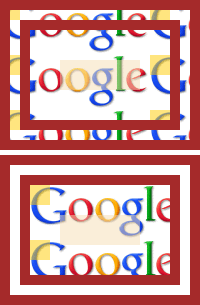
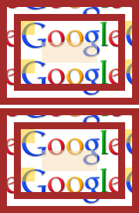
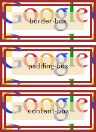
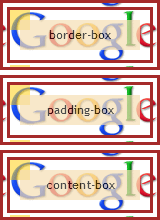
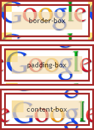

根据 CSS2.1 规范中的描述，'background-image' 特性可以设定元素的背景图片，此特性可应用于所有元素。
'background-position' 特性指定了拥有背景图片的元素背景图片的初始位置。当此特性取值为 <percentage> 和 <length> 时，图片位置的偏移均参照元素的
padding box，即若没有明确设定 'background-position' 特性，其初始值为 "0% 0%"，背景图片的起始点应刚好起始于元素的 padding edge
的左上角。
在 CSS3 草案的背景及边框模块定义中新增加了 'background-origin' 特性，这个特性可以指定背景图片的位置区域，其取值可以为 'padding-box'、'border-box'、'content-box'，分别可以将背景图片的起始位置设定在这些框上。
关于 背景 的详细信息，请参考 CSS2.1 规范 14.2 The background 及 CSS3 草案 CSS Backgrounds and Borders Module Level 3 中的内容。
若设定了背景图片的元素在 IE6 IE7 IE8(Q) 中没有触发 hasLayout 特性，则此时在 IE6 IE7 IE8(Q) 中元素背景图片的位置会与其他浏览器出现差异。
此问题会导致背景图片在不同浏览器中出现差异，可能导致依赖背景图片的设计在某些浏览器中异常。
| 所有浏览器 |
|---|
分析以下代码：bg_tiling.html
<!DOCTYPE html> <html> <head> <style> .bg { background-image:url(bg.gif);
border:30px double brown; padding:30px; } .child { width:80px; height:30px; background:wheat;
opacity:0.5; filter:alpha(opacity=50); } </style> </head> <body
style="margin:0;"> <div style="float:left;"> <div
class="bg"> <div class="child"></div> </div> </div>
<div style="zoom:1; clear:left; margin-top:5px;"> <div style="float:left;"
class="bg"> <div class="child"></div> </div> </div>
</body> </html>
上面代码中 .bg 设定了背景图片 ，为了便于查看图片的起始位置，特地将图片左上角放置了一个 20*20 的半透明方块。第二组元素比第一组多设定了 'zoom' 特性，则此特性在 IE6 IE7 IE8(Q) 中会触发元素的 hasLayout 特性。
这段代码在不同浏览器中运行结果如下：
| IE6 IE7 IE8(Q) | IE8(S) Firefox Chrome Safari Opera |
|---|---|
|  |  |
可见，
下面观察各浏览器对 CSS3 新特性 'background-origin' 的支持情况：bgorigin.html
<!DOCTYPE html> <html> <head> <style> * { font:12px 'Trebuchet MS'; } .bg {
background-image:url(bg.gif); border:10px double brown; padding:10px; } .child { width:120px;
height:30px; line-height:30px; text-align:center; background:wheat; opacity:0.7;
filter:alpha(opacity=70); } </style> </head> <div style="float:left;">
<div class="bg" style="background-origin:border-box;"> <div
class="child">border-box</div> </div> </div> <br /> <div
style="float:left; clear:left; margin-top:5px;"> <div class="bg"
style="background-origin:padding-box;"> <div
class="child">padding-box</div> </div> </div> <br /> <div
style="float:left; clear:left; margin-top:5px;"> <div class="bg"
style="background-origin:content-box;"> <div
class="child">content-box</div> </div> </div> </body>
</html>
这段代码在不同浏览器中运行结果如下：
| IE6 IE7 IE8(Q) | IE8(S) Firefox1 | Chrome Safari Opera |
|---|---|---|
|  |  |  |
可见，Chrome、Safari、Opera 已经支持 CSS3 新特性 background-origin。
注 1: IE9 beta 以及 Firefox 4.0 beta 的最新版本已经支持 background-origin。
在为元素设定 'background-image' 特性时，若元素拥有边框，则需要使其在 IE6 IE7 IE8(Q) 中触发 hasLayout 特性。
| 操作系统版本: | Windows 7 Ultimate build 7600 |
|---|---|
| 浏览器版本: |
IE6
IE7 IE8 Firefox 3.6.11 Chrome 8.0.552.5 dev Safari 5.0.2 Opera 10.63 |
| 测试页面: |
bg_tiling.html
bgorigin.html |
| 本文更新时间: | 2010-10-20 |
background background-image tile CSS3 背景 图片 background-origin border-box padding-box